Our Work
Browse braids, colour, haircuts, and beauty treatments from Daisy Blooms Salon in Rosebank and Melville, Johannesburg. Choose a service to filter the photos, then tap any picture to see it larger.
Showing all 16 photos

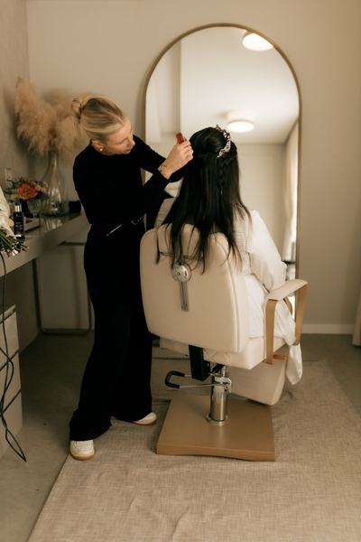

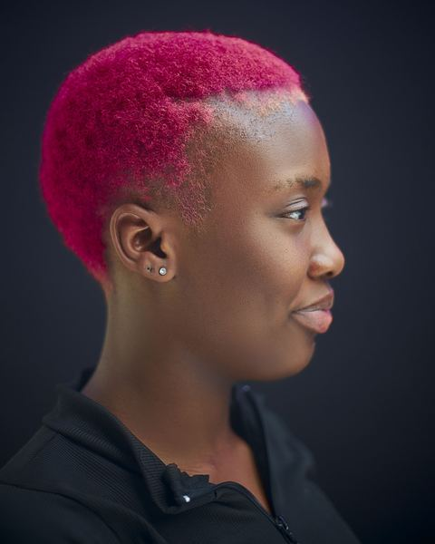

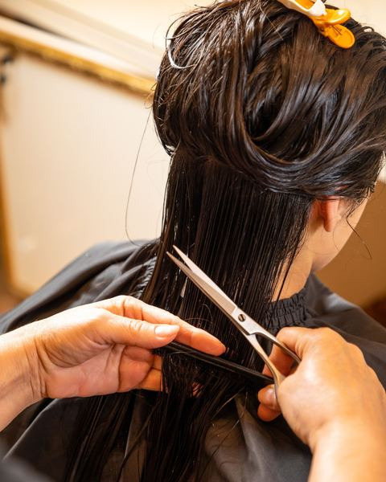

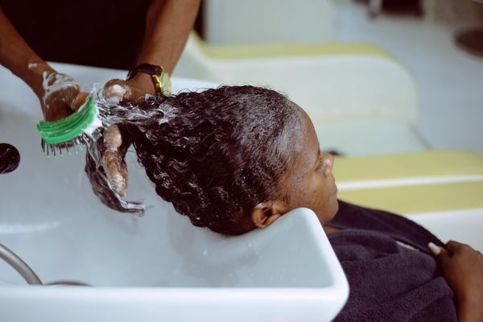

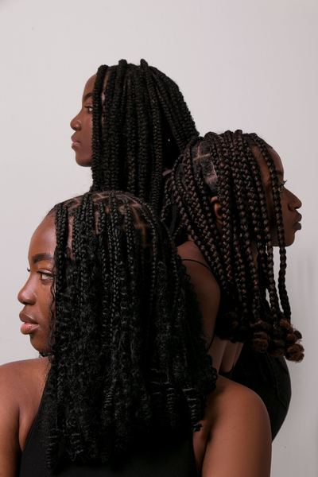

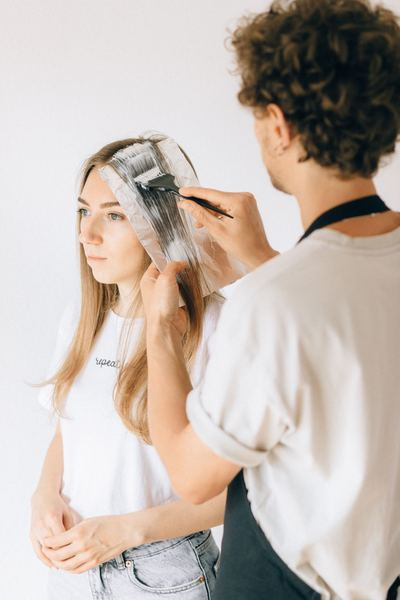

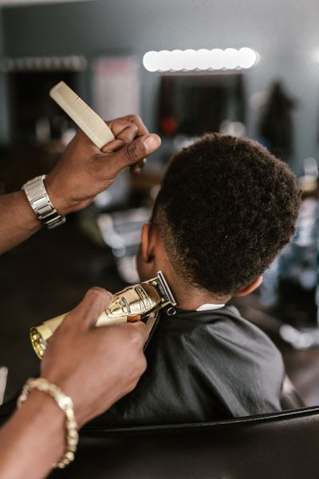

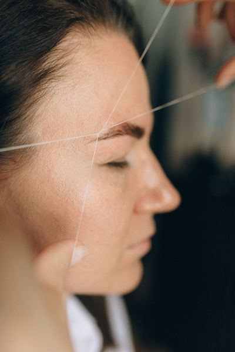

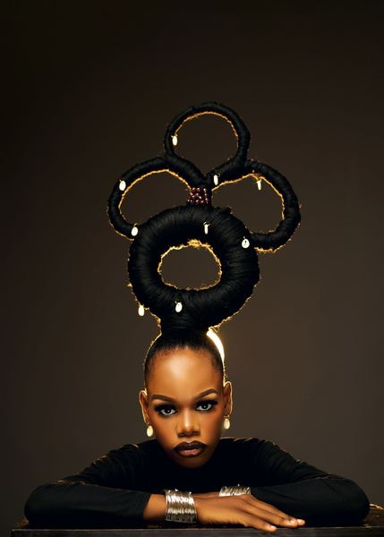

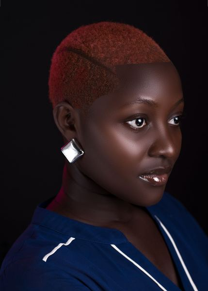

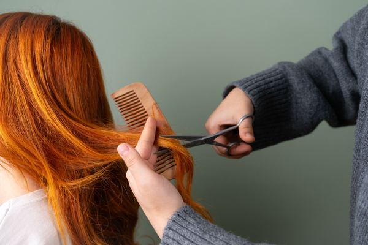

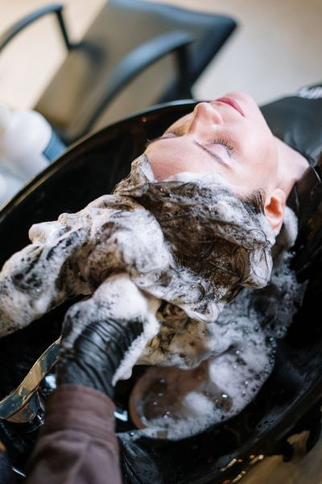


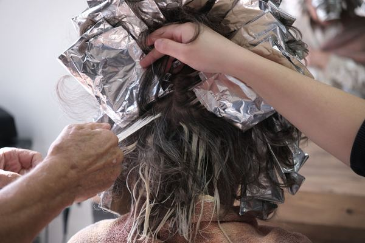

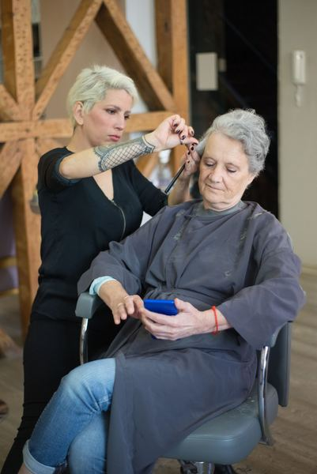

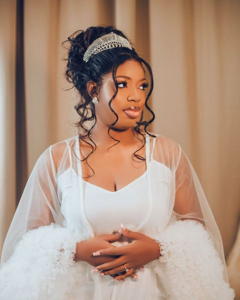
Gallery photos are free-licence images from Pexels. Photographer credits are listed in the References section of the project README.